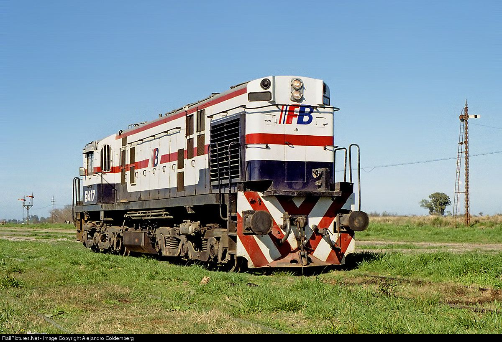
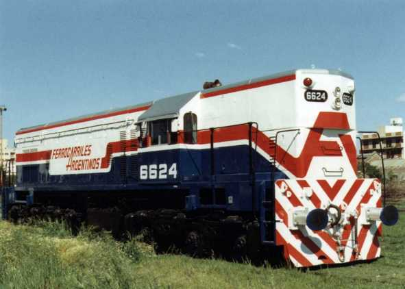
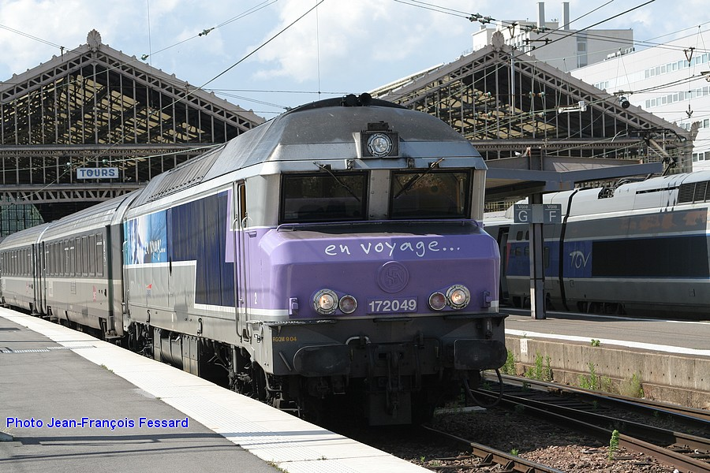

Locomotora ALCO RSD 35

Hacia fines de 1961 la Empresa Ferrocarriles del Estado Argentino (E.F.E.A.) contrata con la compañía Norteamericana ALCO (American Locomotive Company) la provisión de 110 locomotoras Diesel Eléctricas del tipo multipropósito de 1300 HP para los Ferrocarriles Gral. Belgrano y Gral. San Martín.
El primero de estos recibió 40 unidades fabricadas en los Estados Unidos en la planta de Shenectady em el estado de New York. Mientras que las 70 restantes destinadas a la línea San Martín fueron construidas en Canadá
La particularidad de este modelo de locomotora, es la de haber sido el único modelo de origen norteamericano "doméstico", para su uso en los Estados Unidos, México y Canadá, que tuvieron los ferrocarriles Argentinos en la época estatal, que claramente se destacaron del resto de las locomotoras de exportación.
GM GR12 W
Nuevo Central Argentino

Recibió 27 locomotoras GR12W. Las misma son atendidas en Villa Diego, los talleres propios de La empresa. Allí se reparan y colocan plantas motrices, generadores, equipos de freno, telémetro, sistemas de comunicación tren -tierra y bocinas de hasta 5 tonos. También se implantaron, sobre las ventanas laterales de la cabina, rejas corredizas con el fin de proteger al personal y al material de las agresiones con pedradas.
Su radio operativo se extiende desde el puerto de Buenos Aires hasta Tucumán, pasando por el sur de Santa Fe Córdoba, Rosario y Santiago del Estero
Ferroexpreso Pampeano S.A
Esta empresa fue la primera concesionaria de un servicio de cargas, y tomó posesión del viejo ramal Rosario - Puerto Belgrano y de otros anexados, el 26 de octubre de 1991. siendo la unidad 6635 la encargada de arrastrar el tren inaugural.
Spurr, en las inmediaciones de Bahía Blanca, es el taller principal por excelencia para estas locomotoras.
SNCF Clase 72000 y CP Clase 1900

Cuando la SNCF emprendió la construcción de locomotoras diesel de línea principal en 1961, se sabía que para los trabajos más pesados llegaría a necesitarse una unidad con más potencia que los 2.650 hp de la Clase 68000. Se encargaron entonces dos pares de locomotoras experimentales de doble motor, que podían desarrollar hasta 4.800 hp.
Sin embargo, nunca fue excesivo el entusiasmo por las complicaciones de las máquinas de doble motor, y el desarrollo de nuevos motores diesel en la gama de 3.500 a 4.000 hp animó a la SNCF en 1964 a invitar a los fabricantes a presentar ofertas de una locomotora potente de un solo motor.
En 1966 SNCF encargó a Alsthom 18 locomotoras, que empezaron a entregarse al año siguiente, convirtiéndose en la clase 72000. Por ese entonces, la SNCF estaba desarrollando una nueva familia de locomotoras eléctricas que incorporaban bogies monomotores, y las locomotoras de la Clase 72000 tenían varias piezas en común con las unidades eléctricas.
La principal innovación en el sistema eléctrico era el uso de un alternador en lugar de un generador de corriente continua: suministra corriente trifásica rectificada por diodos de silicio para alimentar los motores de tracción con corriente continua.